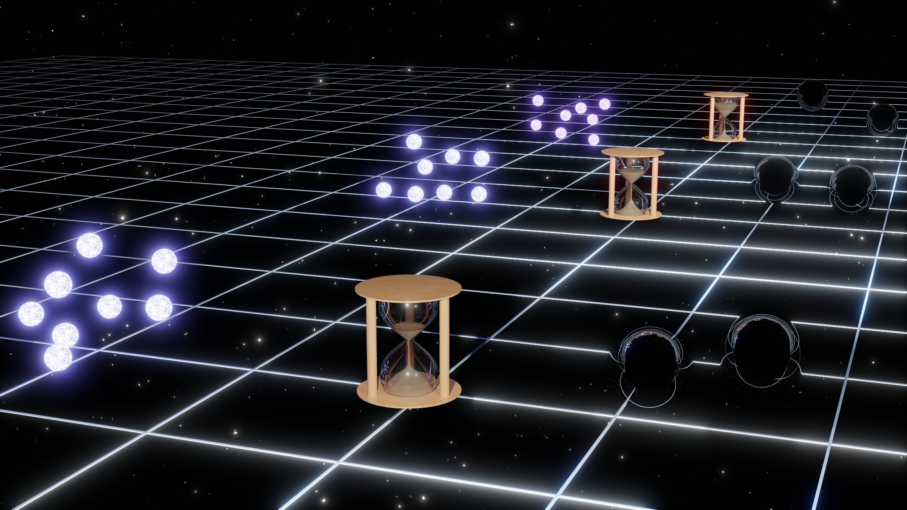

Qianhang Ding 丁乾航 To Understand To Find
I am a Research Fellow at
Center for Theoretical Physics of the Universe (CGA Group),
Institute for Basic Science.
Room B465, Center for Theoretical Physics of the Universe, 2018-2023 PhD in Physics, Department of Physics, Hong Kong University of Science and Technology 2014-2018 Bachelor of Physics, Department of Physics, Shanxi University
I mainly works on gravitational wave cosmology, and use gravitational wave as a probe to understand the fundamental physics in cosmology, such as cosmic tensions in Lambda-CDM model, the property of dark universe, and the origin of primordial black holes. Based on my work, I try to understand the origin of the universe.
Contact information:
Theory Building, Institute for Basic Sciene (IBS),
55, Expo-ro, Yuseong-gu, Daejeon, Korea.
Email:
dingqh@ibs.re.kr
Education
Employment
2023-present Senior Researcher, Center for Theoretical Physics of the Universe (CGA Group), Institute for Basic Science
2024, 05-06 QUPIP Researcher, QUP, High Energy Accelerator Research Organization (KEK)
2022-2023 Research Assistant, Department of Physics, Hong Kong University of Science and Technology
Research Interest
Theory: gravitational wave cosmology, cosmic tensions, primordial black hole, and fundamental topics
Observation: multi-messenger astronomy such as CMB physics, gravitational wave and pulsar astronomy
Research Highlights

Cosmological Standard Timers Cosmological dynamic systems can work as standard timers in tracking the evolution of the Universe. By studing their intrinsic dynamics, the physical evolution time from the initial state to later states can be extracted. Meanwhile, cosmological redshift can be decoded from their observable. As the result, the redshift-time relation can be constructed in cosmological standard timers, which can constrain cosmological models. In the first study on standard timers, we have shown that through the Hawking radiation emitted from light primordial black hole (PBH) clusters, PBH stellar bubbles can be used as standard timers [2112.10422]. Later, I show that through gravitational waves emitted from PBH binaries, PBH binaries can be used as standard timers [2206.03142].
Recent Researches
The merger rate of primordial black hole binaries as a probe of Hubble parameter [PDF]
Qianhang Ding
Abstract:
We propose that the merger rate of primordial black hole (PBH) binaries can be a probe of Hubble parameter by constraining PBH mass function in the redshifted mass distribution of PBH binaries. In next-generation gravitational wave (GW) detectors, the GWs from PBH binaries would be detected at high redshifts, which gives their redshifted mass and luminosity distances. From a number of detected events, the redshifted mass distribution of PBH binaries can be statistically obtained, and it depends on PBH mass function and redshift distribution of detected PBH binaries. The PBH mass function can be inversely solved by applying the gradient descent method in the relation between redshifted mass distribution and redshift distribution. However, the construction of redshift distribution requires an assumed Hubble parameter in a background cosmology to extract redshift from luminosity distances, which causes solved PBH mass function also depends on assumed Hubble parameter. To determine the Hubble parameter, the merger rate of PBH binaries constrains on this Hubble parameter-dependent PBH mass function by comparing calculated merger rate distribution with observed one, and the best-fit result produces an approximate mass distribution of the physical PBH mass function and pins down the Hubble parameter.
A Dark Matter Probe in Accreting Pulsar-Black Hole Binaries [PDF]
Ali Akil, Qianhang Ding
Abstract:
The accretion of dark matter (DM) into astrophysical black holes slowly increases their mass. The rate of this mass accretion depends on the DM model and the model parameters. If this mass accretion effect can be measured accurately enough, it is possible to rule out some DM models, and, with the sufficient technology and the help of other DM constraints, possibly confirm one model. We propose a DM probe based on accreting pulsar-black hole binaries, which provide a high-precision measurement on binary orbital phase shifts induced by DM accretion into black holes, and can help rule out DM models and study the nature of DM.
Outreach
Astrophotography [BiliBili Channel]
Popular science article for the Hong Kong Laureate Forum [Link]